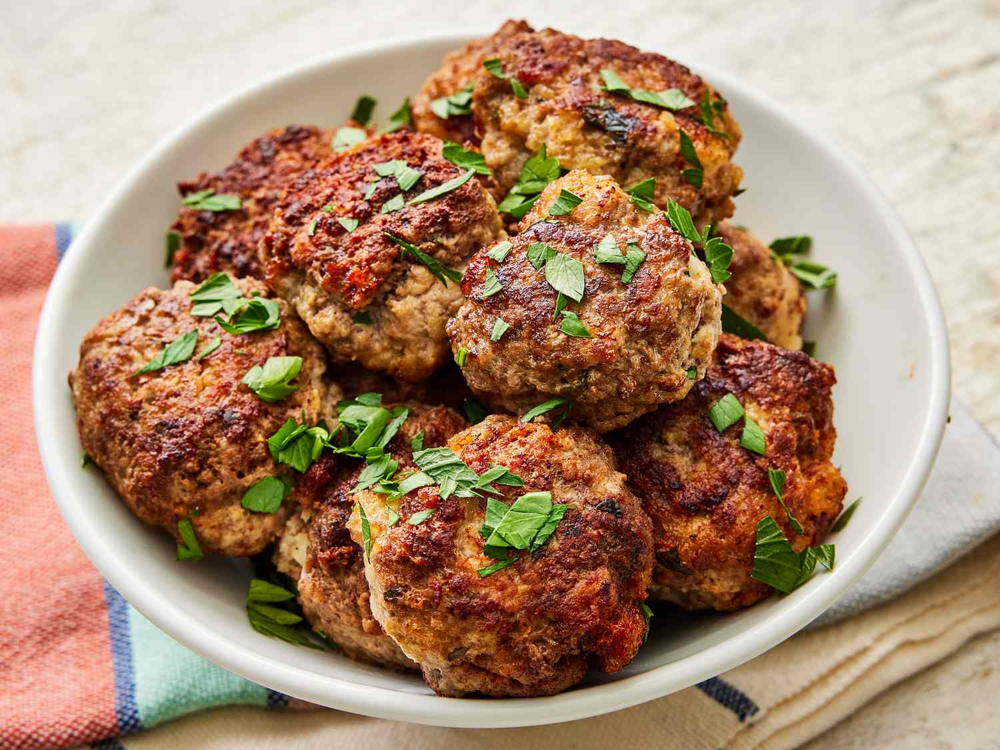

Meatballs

Description
Searching for the best meatball recipe ever?
These meatballs are tender, juicy, and full of flavor.
Ingredients
- Blend of ground beef, ground veal, and ground pork
- Fresh garlic, fresh Italian parsley, and ground black pepper
- Eggs
- A cup of freshly grated Romano cheese
- Slightly stale Italian bread
- Water
- Olive oil
Steps
- Combine all the ingredients except olive oil into a bowl.
- Add the bread crumbs and slowly add water to keep the meatballs moist.
- Shape the mixture into meatballs.
- Fry the meatballs on olive oil until they are brown and crisp.
- Cook the meatballs in batches, for about 20 minutes, without crowding the pan.